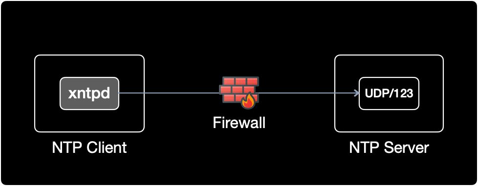

AIX NTP 데몬 설정
개요
IBM AIX의 클라이언트 서버에서 NTP 데몬을 동작후 NTP 서버와 시간 동기화하는 방법을 설명한다.
어느날 내가 관리하는 IBM AIX 서버가 NTP 동기화가 안되고 있길래 점검하면서 공부할 겸 정리한 메뉴얼이다.
증상
IBM AIX 클라이언트에서 NTP 서버와 시간 동기화가 불가능하다.
$ ntpq -p
ntpq: read: A remote host refused an attempted connect operation.
원인
NTP 데몬인 xntpd가 실행중이지 않았다.
환경
- OS : IBM AIX 7.2.0.0
- Shell : ksh
조치방법
1. NTP 데몬 상태확인
IBM AIX에서 NTP 데몬의 이름은 xntpd이다. 리눅스의 경우는 ntpd이다.
가장 먼저 xntpd가 실행중인지 확인한다.
$ ps -ef | grep xntpd
root 16449928 8848040 0 08:25:49 pts/0 0:00 grep xntpd
xntpd 가 실행중이지 않다.
2. NTP 설정파일 확인
IBM AIX의 NTP 설정파일의 절대경로는 /etc/ntp.conf로 리눅스와 동일하다.
xntpd는 시작될 때 /etc/ntp.conf 설정 정보를 읽는다.
해당 설정파일을 수정하자.
$ cat /etc/ntp.conf | grep -v ^#
...
broadcastclient
driftfile /etc/ntp.drift
tracefile /etc/ntp.trace
server 10.10.10.123 prefer
prefer
NTP 서버 IP 뒤에 prefer 키워드가 붙을 경우, 해당 NTP 서버와 우선적으로 연결한다.
명령어 설명
grep -v ^#는 주석을 제외한 내용만 출력하겠다는 의미이다.
NTP 설정파일인 ntp.conf 상단에는 제조사인 IBM에서 초기 작성한 주석 라인이 약 30줄 정도로 많다.
grep -v ^# 명령어를 붙이면 주석이 아닌 실제 설정 내용만 필터링해서 출력하기 때문에 보기 편하다.
3. NTP 서비스 기동
$ startsrc -s xntpd -a "-x"
0513-059 The xntpd Subsystem has been started. Subsystem PID is 19268504.
xntpd 서비스가 시작되었다.
startsrc 명령어 설명
-s: 서비스 이름-a: 서비스 옵션 파라미터"-x": 클라이언트의 시간이 뒤로 돌아가는 것을 방지하는 옵션
시간롤백 방지 “-x”
- 만약 참조하는 NTP 서버(time server)가 현재 시간보다 과거시점으로 시간이 변경되었을 때, 해당 NTP 서버를 참조하는 클라이언트 측에서 시간이 뒤로 돌아가는 현상을 방지하기 위해서 xntpd 시작시,
-x옵션을 준다. - Oracle DB 서버의 경우 시간 롤백이 발생할 경우 충돌될 수 있으므로 반드시 xntpd 시작시
-x옵션을 넣어서 시간이 뒤로 돌아가는 것(time backward)을 방지한다.
4. NTP 데몬 동작상태 확인
$ ps -ef | grep xntpd
root 11010996 8848040 0 08:55:57 pts/0 0:00 grep xntpd
root 19268504 3146712 0 08:55:54 - 0:00 /usr/sbin/xntpd -x
19268504 PID를 가진 xntpd 데몬이 -x 옵션이 붙은 상태로 잘 동작중이다.
$ lssrc -s xntpd
Subsystem Group PID Status
xntpd tcpip 19268504 active
xntpd의 PID는 19268504, 상태는 동작중(active)이다.
5. NTP 수동 동기화 실행
$ ntpdate -d 10.10.10.123
26 Oct 09:51:07 ntpdate[16777548]: 3.4y
transmit(10.10.10.123)
receive(10.10.10.123)
transmit(10.10.10.123)
receive(10.10.10.123)
transmit(10.10.10.123)
receive(10.10.10.123)
transmit(10.10.10.123)
receive(10.10.10.123)
transmit(10.10.10.123)
server 10.10.10.123, port 123
stratum 1, precision -19, leap 00, trust 000
refid [GPS], delay 0.02525, dispersion 0.00034
transmitted 4, in filter 4
reference time: e521cf7a.00000000 Tue, Oct 26 2021 9:51:06.000
originate timestamp: e521cf7b.6dd2f12b Tue, Oct 26 2021 9:51:07.429
transmit timestamp: e521cf7b.6dd32000 Tue, Oct 26 2021 9:51:07.429
filter delay: 0.02649 0.02769 0.02525 0.02640
0.00000 0.00000 0.00000 0.00000
filter offset: 0.000229 -0.00127 -0.00016 -0.00039
0.000000 0.000000 0.000000 0.000000
delay 0.02525, dispersion 0.00034
offset -0.000160
26 Oct 09:51:07 ntpdate[16777548]: adjust time server 10.10.10.123 offset -0.00016
만약 ntpdate -d 실행후 no server suitable for synchronization found 에러 메세지가 발생할 경우, 아래 2가지 사항을 점검해보자.

- NTP 서버에서 NTP 데몬(리눅스의 경우
ntpd, AIX의 경우xntpd)이 정상 동작중인가? - 클라이언트와 NTP 서버 사이에 위치한 방화벽에서 NTP용 포트인 123번 포트가 통과 허용되어 있는가?
- NTP 클라이언트와 NTP 서버의 iptables
- 물리 방화벽 장비, IPS, IDS와 같은 네트워크 보안 장비
transmit과 receive가 반복되면 NTP 서버와 클라이언트간 시간 데이터를 잘 주고 받고 있다는 의미이다.
...
transmit(10.10.10.123)
receive(10.10.10.123)
transmit(10.10.10.123)
receive(10.10.10.123)
transmit(10.10.10.123)
receive(10.10.10.123)
transmit(10.10.10.123)
receive(10.10.10.123)
transmit(10.10.10.123)
...
시간 오차값(offset)은 -0.000160 이다.
...
offset -0.000160
...
6. NTP 동기화 여부 확인
등록된 NTP 서버와 동기화된 상태인지 확인한다.
$ ntpq -p
remote refid st t when poll reach delay offset disp
==============================================================================
*10.10.10.123 .GPS. 1 u 20 64 377 0.76 0.183 0.20
ntpq 설명
-
remote: IP 앞에*표시가 붙으면 해당 NTP 서버와 클라이언트가 정상적으로 동기화된 상태를 의미한다. -
when: NTP 서버로부터 데이터를 수신한 후 경과된 시간으로 데이터를 받으면 0으로 초기화된다. 단위는 초(second). -
poll: 클라이언트가 NTP 서버에 동기화 요청하는 주기. 단위는 초(second). -
reach: 최근 8번 Poll 요청에 대한 NTP 서버의 응답 여부. reach는 8진수로 표기된 값이다. 시간이 지날수록 오르면서 377에 도달하면 동기화가 완료된다.reach 10진수 2진수 해석 1 1 0 0 0 0 0 0 0 1 최근 8번 시도중 1번 성공 3 3 0 0 0 0 0 0 1 1 최근 8번 시도중 2번 성공 7 7 0 0 0 0 0 1 1 1 최근 8번 시도중 3번 성공 17 15 0 0 0 0 1 1 1 1 최근 8번 시도중 4번 성공 37 31 0 0 0 1 1 1 1 1 최근 8번 시도중 5번 성공 77 63 0 0 1 1 1 1 1 1 최근 8번 시도중 6번 성공 177 127 0 1 1 1 1 1 1 1 최근 8번 시도중 7번 성공 377 255 1 1 1 1 1 1 1 1 최근 8번 시도중 8번 성공 -
delay: 네트워크 지연시간. 단위는 밀리초(millisecond).delay값이 5보다 작아야 한다.
7. NTP 자동시작 설정
/etc/rc.tcpip는 부팅시 TCP/IP 데몬들과 Subsystem을 호출하는 설정 파일이다.
서버가 리부팅 되더라도 NTP 데몬을 자동시작 하도록 설정파일을 수정한다.
변경 전 설정파일
$ vi /etc/rc.tcpip
...
# Start up Network Time Protocol (NTP) daemon
#start /usr/sbin/xntpd "$src_running" "-x"
start /usr/sbin/xntpd ... 라인의 주석을 제거해서 서버 재부팅 후에도 NTP Daemon이 자동 기동되도록 설정한다.
시간롤백을 방지하는 -x 옵션도 선언되어 있는지 잘 확인한다.
변경 후 설정파일
$ vi /etc/rc.tcpip
...
# Start up Network Time Protocol (NTP) daemon
start /usr/sbin/xntpd "$src_running" "-x"
참고자료
AIX 공식문서: xntpd 데몬
IBM-AIX 7.2 버전의 xntpd 공식문서입니다.